Legacy Document
Important: The information in this document is obsolete and should not be used for new development.
Important: The information in this document is obsolete and should not be used for new development.


How the LAP Manager Calls Your Transition Event
This section describes how to write a transition event handler routine that responds to notification of AppleTalk transitions. Because the LAP Manager calls your transition event routine using C conventions, a transition event handler routine written in Pascal requires glue code to function correctly. To help solve this problem, this section includes a discussion of how to write a transition event routine using Pascal, and it also
Handler Routine
includes glue code that you will need. This section also describes the standard AppleTalk transitions and how your routine can respond to a particular transition.When you have used the
LAPAddATQfunction to add an entry to the AppleTalk Transition Queue, the LAP Manager calls the transition event handler routine, whose pointer you pass to the LAP Manager in the AppleTalk Transition Queue entry record, whenever an AppleTalk transition occurs.Table 10-1 shows the standard AppleTalk transitions (each of which is discussed later in this section) and their constants and routine selectors.
Table 10-1 AppleTalk transitions and their constants and routine selectors AppleTalk transition Constant Routine selector Open ATTransOpen 0 Prepare-to-close ATTransClose 2 Permission-to-close ATTransClosePrep 3 Cancel-close ATTransCancelCATTransCancelClose 4 Network-connection- change ATTransNetworkTransition[2] 5 Flagship-name-change ATTransNameChangeTellTask* 6 Permission-to-change-
flagship-nameATTransNameChangeAskTask* 7 Cancel-flagship-name- change ATTransCancelNameChange* 8 Cable-range-change ATTransCableChange* 'rnge' CPU-speed-change ATTransSpeedChange* 'sped' From assembly language, when the LAP Manager calls your routine, the stack looks
like this: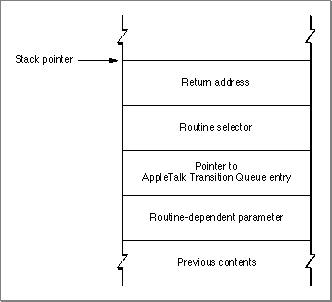
The first item on the stack (after the 4-byte-long return address) is a routine selector. There is one routine selector for each type of transition. Some transition events have a single-digit routine selector. Other transition events are four-character codes. Codes starting with an uppercase letter (A through Z) are reserved for use by developers. All other codes are reserved for use by Apple Computer, Inc.
The second item passed to your routine on the stack is a pointer to your routine's entry in the AppleTalk Transition Queue. You can use this pointer to gain access to any fields at the end of the queue entry that you allocated for your own use. The last item passed to your routine on the stack is a 4-byte-long parameter whose meaning depends on the type of transition.
With the exception of the open transition, the prepare-to-close transition, the flagship-
name-change transition, the permission-to-change-flagship-name transition, and the cancel-flagship-name transition, the interface between the AppleTalk Transition Queue and your routine must follow these conventions:
Again, these restrictions do not apply to the open transition, the prepare-to-close transition, and the three flagship-name transitions.
- Your routine must preserve all registers except D0, D1, D2, A0, and A1.
- All parameters are passed on the stack as long words.
- Because your routine might be called at interrupt time, your routine must not make any direct or indirect calls to the Memory Manager, and it cannot depend on handles to unlocked blocks being valid, unless otherwise noted in the description of the transition event.
- If you want to use any of your application's global variables, you must save the contents of the A5 register before using the variables and you must restore the
A5 register before your routine terminates.
- IMPORTANT
- It is important that you return a 0 in the D0 register whenever you receive a transition event routine selector that you do not recognize or do not choose to handle. Returning a nonzero value in the D0 register might cause the system to cancel an attempt to close AppleTalk, for example, or it might be misinterpreted in some other way. You should only return a nonzero result to known transition events.

Writing a Transition Event Handler Routine Using Pascal
The LAP Manager assumes that you will use theCallAddrfield of your event record to pass it a pointer to a transition event handler routine that is written in the C program-
ming language. The LAP Manager use C calling conventions when it calls your routine.If you write your transition event handler routine in Pascal, you must include a glue code wrapper routine. You can use either the sample glue code provided in this section or your own method. To use this glue code, you must modify the AppleTalk Transition Queue entry record to include a field to hold a pointer to your Pascal transition event handler routine. You must add this field directly after the
CallAddrfield. You use theCallAddrfield to pass the address of the assembly-language glue code routine. Here is the type declaration for an AppleTalk Transition Queue entry record that includes the additional field that is required if you use the glue code:
TYPE myATQEntry = RECORD qlink: Ptr; {ptr to next queue entry} qType: Integer; {reserved} CallAddr: ProcPtr; {ptr to the glue code} PATQProcPtr: ProcPtr; {ptr to Pascal ATQ } { routine; this field must } { follow the CallAddr field. } { Do not change the order of } { these fields.} globs: TransEventPtr; {ptr to user defined globals} END; myATQEntryPtr = ^myATQEntry; myATQEntryHdl = ^myATQEntryPtr;The following segment of code shows how to add an AppleTalk Transition Queue entry to the queue. In this example, the actual transition event handler routine is calledATQueueProc. The glue code routine is calledCallTransQueue. TheLAPAddATQfunction passes the glue code routine to the LAP Manager in theCallAddrfield of
the AppleTalk Transition Queue entrymyATQEntry.
VAR gATQEntry: myATQEntry; OSErr: err; BEGIN gATQEntry.CallAddr := ProcPtr(@CallTransQueue); gATQEntry.PATQProcPtr := ProcPtr(@ATQueueProc); err := LAPAddATQ(ATQEntryPtr(@gATQEntry));Listing 10-4 shows the sample assembly-language glue code routineCallTransQueuethat you can use if you write your transition event handler routine in Pascal. The glue routine takes the parameters from the stack and sets up a Pascal stack, then calls the function pointed to by thePATQProcPtrfield of the AppleTalk Transition Queue entry record. On return, the glue code pulls the result from the stack and puts it into the D0 register, where the LAP Manager expects to find it.Listing 10-4 Glue code for a Pascal transition event handler routine
;FUNCTION CallTransQueue (selector: LongInt; q: ATQEntryPtr; ; p: Ptr): LongInt; ;EXTERNAL; CallTransQueue PROCEXPORT LINK A6,#$0000 ;set up a local stack frame CLR.L -(A7) ;set space for return result MOVE.L $0008(A6),-(A7) ;move selector to stack MOVE.L $000C(A6),-(A7) ;move ATQPtr to stack MOVEA.L (A7),A0 ;put copy ATQPtr in A0 MOVEA.L $000A(A0),A0 ;put pointer to real ATQ in A0 MOVE.L $0010(A6),-(A7) ;move last parameter: ; pointer to stack JSR (A0) ;call the Pascal ATQ function MOVE.L (A7)+,D0 ;move result into D0 UNLK A6 ;tear down local stack frame RTS ;return ENDP ENDOpen Transition
When an application calls theMPPOpenfunction or the Device Manager'sOpenDriverfunction, AppleTalk attempts to open the .MPP driver. If the .MPP driver is already open, the LAP Manager does not call the AppleTalk Transition Queue transition event handler routines. If AppleTalk successfully opens the .MPP driver, the LAP Manager then calls every routine listed in the AppleTalk Transition Queue with an open transition (ATTransOpen).When the LAP Manager calls your transition event handler routine, the stack looks
like this: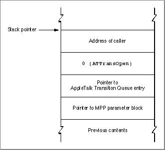
The last item on the stack for an open transition is a pointer to the start of the Device Manager extended parameter block used by the routine that opened the .MPP driver. This pointer is provided for your information only; you must not change any of the fields in this parameter block.
Your transition event handler routine can perform any tasks you wish in response to the notification that the .MPP driver has been opened, such as using the Name-Binding Protocol (NBP) to register a name on the internet. Return 0 in the D0 register to indicate that your routine executed with no error.
- Note
- The open transition event occurs at system task time, during which you can allocate memory.

Prepare-to-Close Transition
When any routine calls theMPPClosefunction or the Device Manager'sCloseDriverfunction to close the .MPP driver, the LAP Manager calls every routine listed in the AppleTalk Transition Queue before the .MPP driver closes with anATTransClosetransition; if the .MPP driver is already closed when a routine calls eitherMPPCloseorCloseDriver, the LAP Manager does not call the transition event handler routines in the AppleTalk Transition Queue.
When the LAP Manager calls your transition event handler routine, the stack looks
- When the system closes the .MPP driver
- Whereas it is unlikely that opening the .MPP driver will adversely affect another program, an application should never close the .MPP driver because another program might be using it. Under certain circum-
stances, however, the system might close the .MPP driver, for example, when the user changes the network connection. In this case, the system will send a permission-to-close transition to each routine in the AppleTalk Transition Queue. This transition indicates that the system intends to close the .MPP driver, and in this way, each transition event handler routine in the queue has the opportunity to deny it permission to do so. When the system sends the permission-to-close transition, any routine in the AppleTalk Transition Queue that wishes to deny permission to close the .MPP driver can return a pointer to a Pascal string that gives the name of the application that placed the entry in the queue. If any routine denies permission to close the .MPP driver, the LAP Manager sends a cancel-close transition to every routine in the AppleTalk Transition Queue that previously received the permission-to-
close transition. The application that caused the system to send a permission-to-close transition application may display a dialog box informing the user that another application is using the .MPP driver and showing the name (if any) returned by the transition event handler routine. The dialog box gives the user the option of canceling the request to close AppleTalk or of closing AppleTalk anyway. If the user chooses to close AppleTalk despite the fact that an application is using it, the system calls theMPPClosefunction. The LAP Manager then sends a prepare-to-close transition to each application in the AppleTalk Transition Queue, informing each one that AppleTalk is about to close. In this case, your transition event handler routine must prepare for the imminent closing of AppleTalk; it cannot deny permission to theMPPClosefunction.
like this: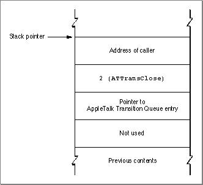
Your routine can perform any tasks you wish to prepare for the imminent closing of AppleTalk, such as ending a session with a remote terminal and informing the user that the connection is being closed. You must return control to the LAP Manager as quickly as possible. Return 0 in the D0 register to indicate that your routine executed with no error.
- Note
- When the LAP Manager calls your routine with a prepare-to-close transition (that is, a routine selector of
ATTransClose), you cannot prevent the .MPP driver from closing.Permission-to-Close Transition
When a routine calls AppleTalk to inform AppleTalk that it wants to close the .MPP driver, the LAP Manager calls every transition event handler routine to request permission to close the .MPP driver with anATTransClosePreptransition.When the LAP Manager calls your transition event handler routine, the stack looks
like this: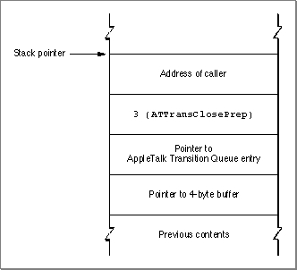
The last parameter on the stack is a pointer to a 4-byte buffer. If you intend to deny the request to close the .MPP driver, you place in the buffer a pointer to a Pascal string containing the name of your application. This string belongs to the LAP Manager until the LAP Manager finishes processing the cancel-close transition. The routine that issued the request to close the .MPP driver can then display a dialog box telling the user the name of the application that is currently using AppleTalk.
Your routine can return either a function result of 0 in the D0 register, indicating that it accepts the request to close, or a 1 in the D0 register, indicating that it denies the request to close. Note that the operating system might elect to close the .MPP driver anyway; for example, if the user grants permission to close in response to a dialog box.
Because the LAP Manager calls your routine again (with the routine selector set to
ATTransClose) before the .MPP driver actually closes, it is not necessary for your routine to do anything other than grant or deny permission in response to being called for a permission-to-close transition. However, you might want to prohibit users from opening new sessions or establishing new connections while you are waiting for the .MPP driver to close.
- Note
- Earlier versions of Inside Macintosh referred to the
PATalkClosePrepfunction as a means of requesting permission to close the .MPP driver. ThePATalkClosePrepfunction is now only used internally by the .MPP driver.Cancel-Close Transition
When any routine in the AppleTalk Transition Queue denies permission for the .MPP driver to close, the LAP Manager calls each routine that has already received the permission-to-close transition with anATTransCancelClosetransition to inform it that the request to close the .MPP driver has been canceled.When the LAP Manager calls your transition event handler routine, the stack looks
like this: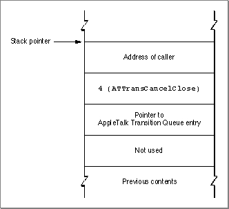
If your routine performed any tasks to prepare for the closing of AppleTalk, it
should reverse their effects when it is called with the routine selector set toATTransCancelClose. Return 0 in the D0 register to indicate that your routine executed with no errors.Network-Connection-Change Transition
To receive notification of network connection changes or transitions, your application should processATTransNetworkTransitiontransitions. All applications running on an AppleTalk network should handle this event, but especially those applications that use multinode IDs.For example, Apple Remote Access (ARA), which uses multinode architecture, allows
a user to establish a connection between two Macintosh computers over standard telephone lines. If the Macintosh that the user dials into is on an AppleTalk network, such as LocalTalk or EtherTalk, the Macintosh effectively becomes a node on that network, and all of the services on that network become available to the user. Because
of this relationship, any application that establishes an ARA connection needs to be notified when new AppleTalk connections are established or broken.
When the LAP Manager calls your transition event handler routine, the stack looks
- Note
- Both the AppleTalk Session Protocol (ASP) and the AppleTalk Data Stream Protocol (ADSP) have been modified to respond to network-
connection-change transitions. When the AppleTalk drivers that implement these protocols receive notification of a network
disconnect transition, they close down sessions on the remote side
of the connection.
like this: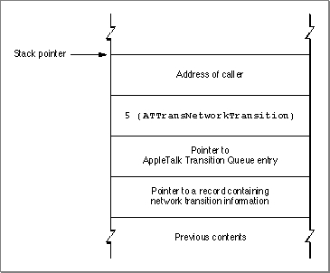
When the LAP Manager calls your routine, the last parameter on the stack contains a pointer to a record that contains a pointer to a network validation procedure. The process that sends notification of the network connection change uses this record to pass to the transition event handler routines a pointer to the network validation procedure; the transition event handler routines can then use this procedure to determine which networks are no longer connected, which networks remain connected, and which new networks have been added. To read the data in the record that this field points to, you must declare the following record type in your application:
- Note
- If you want to use the constant
ATTransNetworkTransitionfor this transition event, you must first declare it in your application because it is not defined in the MPW interface files.
TNetworkTransition = RECORD private: Ptr; {pointer used internally by ARA} netValidProc: ProcPtr; {pointer to the network } { validation procedure} newConnectivity: Boolean; {TRUE = new connectivity, } { FALSE = loss of connectivity} END;You cannot access aProcPtrdirectly from Pascal. Therefore, if you write your application in Pascal and you want to handle theATTransNetworkTransition
event, you need to include the following glue code so that you can access the
network validation procedure pointed to by thenetValidProcfield. Listing 10-5 shows theCallNetValidProcfunction glue code that you can use to call thenetValidProcvalidation procedure passed in theTNetworkTransitionrecord.Listing 10-5 Glue code to handle the network-connection-change transition from Pascal
FUNCTION CallNetValidProc (netTrans: TNetworkTransitionPtr; theNet: LongInt; p: ProcPtr): LongInt; INLINE $205F, { MOVEA.L (SP)+,A0 ;get ProcPtr into A0, and make stack ; right for call } $4E90; { JSR (A0) ;call ProcPtr, and return to caller}The code in Listing 10-6 demonstrates the calling sequence of events for theCallNetValidProcglue code.Listing 10-6 Using the glue code for the network validation procedure
CASE selector OF ATTransNetworkTransition: BEGIN myTNetworkTransitionPtr := TNetworkTransitionPtr(p); if (myTNetworkTransitionPtr^.newConnectivity) THEN BEGIN { /*Determine if there is a new connection.*/ } END ELSE BEGIN { /*If there is a new connection, determine which network */ /* address needs to be validated and assign the value to */ /* checkThisNet.*/ } checkThisNet = $1234FD00; /*network $1234, node $FD, socket not used*/ if (CallNetValidProc(myTNetworkTransitionPtr, checkThisNet myTNetworkTransitionPtr^.netValidProc) <> 0) THEN /*Take the appropriate action depending on result.*/Apple Remote Access (ARA) is an example of a process that generates network-
connection-change transitions to inform transition event handler routines and resident processes that network connectivity has changed. ARA uses theTNetworkTransitionrecord to inform the routines about the changes. ThenewConnectivityfield of theTNetworkTransitionrecord identifies the type of change that has occurred:
Because ARA is connection oriented, it can identify the location of a specific network and inform transition event handler routines that a network is no longer reachable. You can use this information to identify the loss of connections immediately instead of waiting to discover that the other end of the connection is no longer responding.
- If this flag is
TRUE, the network that your node is connected to through ARA has connected to a new internet. In this case, the LAP Manager will return all network addresses identifying them as reachable.- If this flag is
FALSE, specific networks are no longer reachable.
The
netValidProcfield of theTNetWorkTransitionrecord contains a network validation hook for a function that you can use to query ARA about a specific network to determine if that network is still reachable. If the network is reachable, the validation function returnsTRUE. You can call this function repeatedly to determine the status of each network that you are interested in. If you use the Pascal language to write your transition event handler routine, you must implement glue code to use the network validation procedure.The information that the validation function returns is valid only for those routines that use the function in response to a network-connection-change transition.
- Note
- A network-connection-change transition can be sent at interrupt time. Because of this, you should follow the conventions that apply when a routine is called during an interrupt. For example, your routine should not call routines that move memory and you should not call AppleTalk functions synchronously.
Flagship-Name-Change Transition
System 7 allows a user to enter a personalized name that identifies the system when
it is connected to an AppleTalk network. This is called the flagship name. An application that provides network services for a workstation should use the flagship name so
that the user can personalize the name that identifies the workstation to the network while reserving the use of the Chooser name for server connection identification.
If your application utilizes flagship names, your routine should processATTransNameChangeTellTasktransitions. When the LAP Manager calls your
routine with anATTransNameChangeTellTasktransition, you cannot prevent the flagship name from being changed.When a routine calls the
ATEventprocedure to change the flagship name, the LAP Manager calls every routine listed in the AppleTalk Transition Queue with anATTransNameChangeTellTasktransition. When the LAP Manager calls your transition event handler routine, the stack looks like this: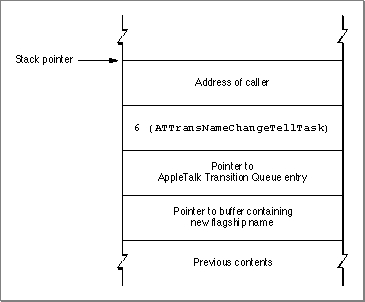
The last item on the stack is a pointer to a Pascal string that is the new flagship name to be registered. Your routine should remove the NBP registrations of entities under the old flagship name. You can make synchronous calls to NBP to remove a registered entity. Return a result of 0 in the D0 register to indicate that your routine executed with no error.
- Note
- Your application should only respond to flagship name changes
about which it receives notification. Do not attempt to change
the flagship name.Permission-to-Change-Flagship-Name Transition
If your application utilizes flagship names, your transition event handler routine should processATTransChangeNameAskTasktransitions. When a process makes a request to change the flagship name, the LAP Manager calls every routine listed in the AppleTalk Transition Queue with anATTransChangeNameAsktransition to request permission to change the name. When the LAP Manager calls your transition event handler routine, the stack looks like this: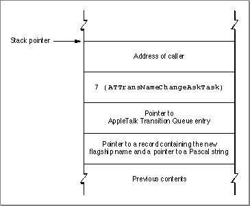
The last item on the stack contains a pointer to a record that holds the new flagship name. The
NameChangeInforecord also includes a field that you use to identify your application if you deny the name-change request. To read from and write to the record, you must declare the following record type in your application:
NameChangeInfo = RECORD newObjStr: Str32; {new flagship name} name: StringPtr; {pointer to } END; { application's name}ThenewObjStrfield contains the proposed flagship name change. Your routine can inspect thenewObjStrfield. If your routine denies the name-change request, you
must provide as the value of thenamefield a pointer to a buffer containing a Pascal string that names your application. The LAP Manager returns this pointer to the process that requested the flagship name change so that the process can then display a dialog box telling the user the name of the application that refused the name change.If your application does not deny the request, you can make synchronous calls to NBP to attempt to register your application under the new flagship name while your transaction event handler routine is processing the request. Apple Computer, Inc. recommends that you register your application with NBP under the new flagship name while you handle the
ATTransChangeNameAskTasktransition. However, you should not remove the old NBP registration until you are certain that other applications have not denied the request to change the flagship name. If another application denies the name-change request, the LAP Manager will send anATTransCancelNameChangetransition to cancel the name-
change request.Return 0 in the D0 register to indicate that you accept the request to change the flagship name. To deny the request, return a nonzero number in the D0 register.
Cancel-Flagship-Name-Change Transition
When any routine in the AppleTalk Transition Queue refuses a request to change
the flagship name, the LAP Manager will send anATTransCancelNameChange
transition to any transition event handler routines that acknowledged theATTransNameChangeAskTasktransition.When the LAP Manager calls your transition event handler routine, the stack looks
like this: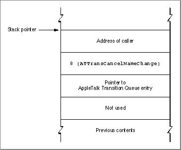
If your routine registered any entities with NBP under the new flagship name while it processed the ATTransNameChange
AskTask, it should remove those entries now. You can make synchronous calls to NBP to remove registration of the entities.Return a result of 0 in the D0 register to indicate that your routine executed with
no errors.Cable-Range-Change Transition
A cable range is a range of network numbers beginning with the lowest network number and ending with the highest network number defined by a seed router for a network. All node addresses, including multinode addresses, that a system on a network acquires must have a network number within the defined cable range. (For information on multinodes, see the chapter "Multinode Architecture" in this book.)
When the cable range of a network changes because, for example, a router on the network shuts down, the LAP Manager will call your transition event handler routine with an
- Note
- For nonextended networks, the lowest and the highest
numbers are the same.ATTransCableChangetransition. This transition notifies you that the cable range has changed for the network to which your node is connected.Applications that use multinodes are examples of processes that should handle this transition. For multinode applications, after receiving notification of the cable range change, you should check the new cable range and determine if all the multinode IDs that the application acquired before the transition event occurred are still valid. If you discover multinode IDs that are no longer valid, you should call the
RemoveNodefunction to remove them. Then you can call theAddNodefunction to obtain new multinode IDs that are within the valid cable range. See the chapter "Multinode Architecture" for information onRemoveNodeandAddNode.The LAP Manager sends you notice of a change in the cable range when the following events occur: AppleTalk first identifies the network router, the last router ages out, or AppleTalk first receives a Routing Table Maintenance Protocol (RTMP) broadcast packet that is different from the current range. The
ATTransCableChangetransition is implemented beginning with AppleTalk version 57. This transition event is issued at system task time only.When the LAP Manager calls your transition event handler routine, the stack looks
like this: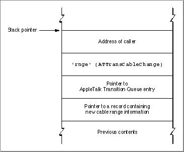
The last item on the stack contains a pointer to a record that holds the new high and low cable numbers that identify the cable range. To access this information, you must declare a record of type
TNewCRTrans. Here is theTNewCRTransrecord type declaration:
TNewCRTrans = RECORD newCableLo: Integer; {new low cable in the range, } { received from RTMP} newCableHigh: Integer; {new high cable in the range, } { received from RTMP} END;CPU-Speed-Change Transition
Some applications change the CPU speed without rebooting the system. For example, an application may alter the cache states on the 68030 or 68040 CPUs or a third-party accelerator card may support dynamic speed changes made through a control panel'cdev'file. Time-dependent processes need to be notified of changes to the CPU speed when these changes occur. If your application changes the CPU speed, you should use theATEventprocedure to send notification of anATTransSpeedChangetransition to time-dependent processes. You must issue this transition event at system task time only. When you call theATEventprocedure, passATTransSpeedChangeas the value of theeventparameter.You must always notify LocalTalk when a CPU speed change occurs. LocalTalk includes a module that is time-dependent; the low-level timer values used in this code must be recalculated when the CPU speed changes. Altering the cache state on the 68030 does not affect LocalTalk, whereas altering the cache state on the 68040 does affect the LocalTalk timers. Therefore, an application that dynamically toggles caching on the 68040 should send notification of an
ATTransSpeedChangetransition. If the application does not do this and LocalTalk is the current network connection, the connection will be broken. LocalTalk implemented in AppleTalk version 57 or later recognizes the CPU-speed-
change transition event notification.The transition event handler routine of any time-dependent process should handle the
ATTransSpeedChangetransition notification. When the LAP Manager calls your transition event handler routine, the stack looks like this: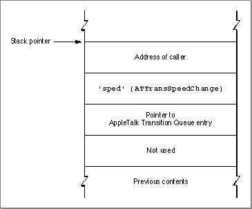
Developer-Defined Transitions
Any AppleTalk transition event code that begins with an uppercase letter (that is, any value in the range $41 00 00 00 through $5A FF FF FF) indicates a developer-defined event. Because you cannot tell how the originator of such an event might interpret a nonzero function result, you must always return 0 in the D0 register for any AppleTalk transition event code that you do not recognize.When you return a nonzero result code for certain developer-defined transitions, the LAP Manager may call your transition event handler routine a second time with a cancel transition analogous to the cancel-close transition.
[2] The constants marked with an asterisk are not included in the header files; you can use the routine selectors for these transitions, or you can define the constants in your application.